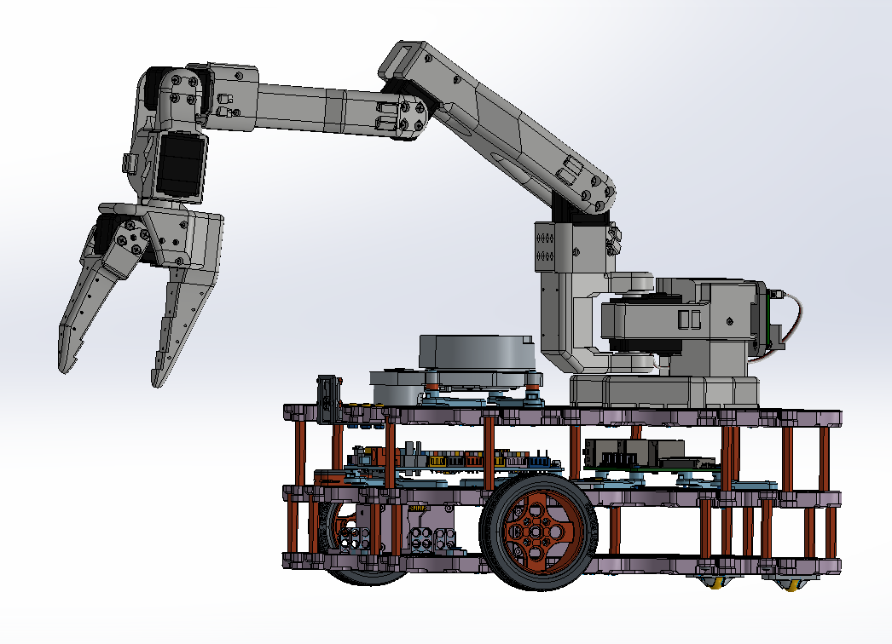
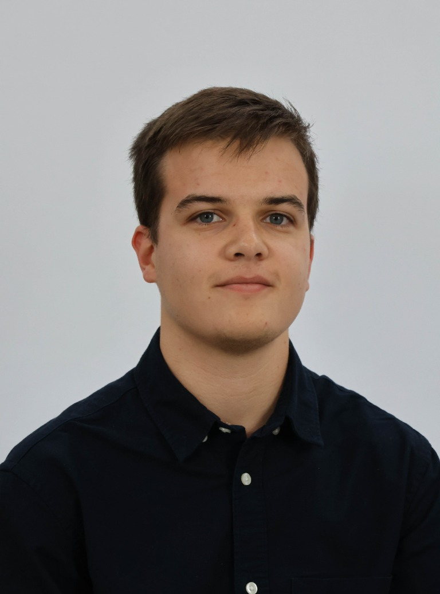
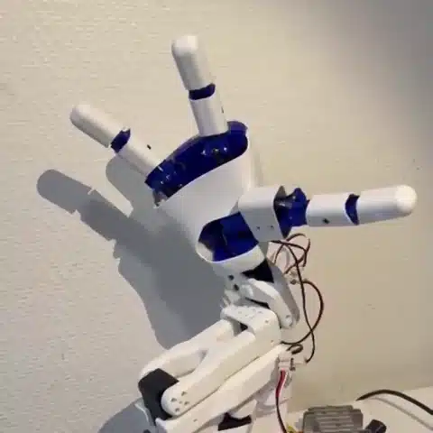

Robot ramasseur de déchets
Réalisé en binôme, ce projet associe une base mobile TurtleBot3 Waffle pour la navigation et un bras LeRobot SO-101 pour ramasser les déchets.
Découvrir le projetÉtudiant ingénieur · mécanique & robotique
Élève ingénieur en dernière année à SIGMA Clermont, spécialité mécanique et robotique. Je recherche un stage de fin d’études de 6 mois à partir de mars 2027, en conception mécanique et mécatronique.
Basé à Paris · Mobilité France entière · Permis B

Projets & expériences
Projets étudiants et expérience
professionnelle.

Réalisé en binôme, ce projet associe une base mobile TurtleBot3 Waffle pour la navigation et un bras LeRobot SO-101 pour ramasser les déchets.
Découvrir le projet
Avec Arthur Mourgue, nous concevons une main légère à cinq degrés de liberté pour le bras SO-101, avec un objectif de 200 g et des pièces imprimables en 3D.
Découvrir le projet
Développement en équipe d’une application de bin-picking pour trier des chaussures, avec planification de trajectoires du cobot UR3e.
Découvrir le projet
Un mois en environnement industriel pour découvrir les règles de sécurité, la logistique et l’approvisionnement des lignes de production.
Découvrir l’expérienceParcours
Capra Robotics · Danemark
Stellantis · Poissy
Conduite de chariot, approvisionnement des lignes et découverte du fonctionnement industriel.
SIGMA Clermont · Robots et Machines Innovantes (en anglais)
Lycée Raspail · Paris
Lycée Descartes · spécialités mathématiques et physique-chimie · option mathématiques avancées
Contact
julien.nvt@gmail.com